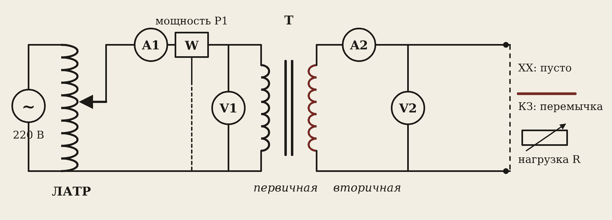
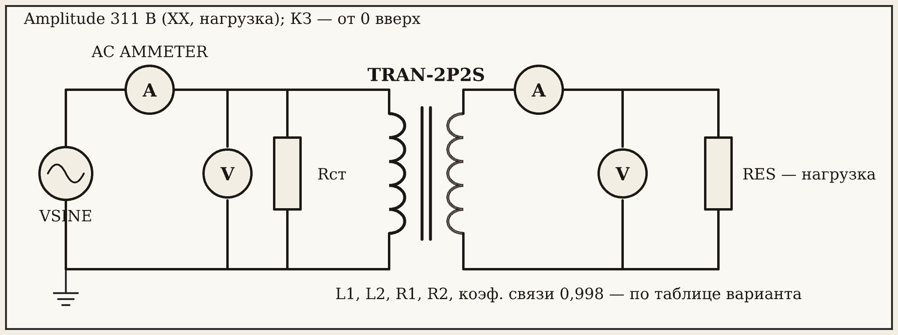
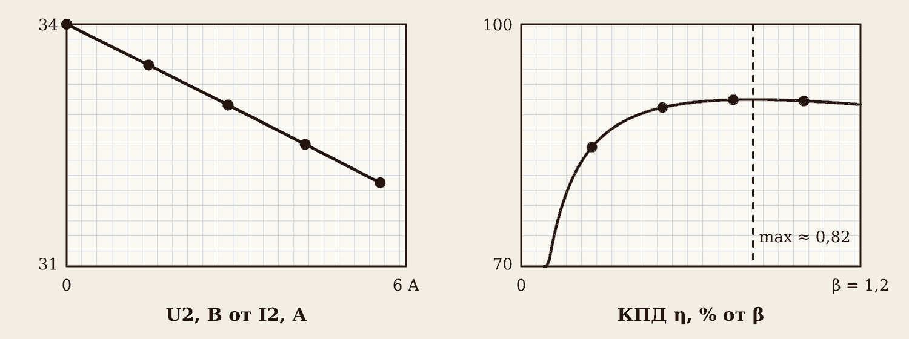

1. Цель и варианты
Цель: опытами холостого хода, короткого замыкания и нагрузки найти коэффициент трансформации, потери в стали и в меди, напряжение КЗ, построить внешнюю характеристику и график КПД.
Вариант N — номер в журнале:
U20 = 24 + N, В S = 100 + 10·N, В·А
Трансформатор 220 / U20 В. Номинальные токи: I1н = S / 220, I2н = S / U20. Для N = 10: трансформатор 220/34 В, 200 В·А, I1н = 0,91 А, I2н = 5,88 А.
Способы выполнения:
- А — Proteus: трансформатор TRAN-2P2S, параметры — из таблицы вариантов в бланке.
- Б — вживую: стенд с маленьким трансформатором и ЛАТРом, под присмотром преподавателя.
- В — браузер: лаборатория «Трансформатор», вкладка «Режимы».
2. Схема

Схема одна на все опыты. ЛАТРом задаём U1. На первичной стороне — A1, ваттметр W (мощность из сети P1) и V1. На вторичной — A2 и V2. На выходе меняем: ничего (холостой ход), перемычка (КЗ), реостат (нагрузка).
Осторожно
ЛАТР — всегда с нуля. Перед опытом КЗ ручка ЛАТРа — на ноль, поднимать плавно, следить за амперметром. Ток не больше номинального. При полном напряжении КЗ — авария: ток в 12 раз больше номинального.

В Proteus: VSINE — Amplitude 311 (это 220 В действующих), 50 Гц. TRAN-2P2S — L1, L2, R1, R2 и Coupling Factor 0,998 из таблицы. Резистор Rст параллельно первичной изображает потери в стали. Ваттметра нет — мощность считаем по формулам.
3. Опыт 1. Холостой ход
U1 = 220 В, выход разомкнут. Записываем U1, I0, P0, U20.
Вариант 10: U1 = 220 В, I0 = 0,081 А, P0 = 8,0 Вт, U20 = 34,0 В. k = U1 / U20 = 220 / 34 = 6,47. I0 / I1н = 0,081 / 0,91 = 8,9 % — ток холостого хода всего несколько процентов: он только намагничивает сердечник. P0 = 8 Вт — это потери в стали: столько трансформатор греет сам себя, даже когда ничего не делает.
4. Опыт 2. Короткое замыкание
Перемычка на выходе. ЛАТР — с нуля плавно вверх, пока I2 не станет номинальным.
Вариант 10: U1к = 17,6 В, I1к = 0,92 А, I2к = 5,88 А, Pк = 12,1 Вт. uк = U1к / U1н · 100 = 17,6 / 220 · 100 = 8 %. Pк = 12 Вт — потери в меди при номинальном токе (сталь почти не греется: напряжение маленькое). При полных 220 В ток КЗ был бы в 100 / 8 = 12,5 раза больше номинального.
Напряжение КЗ пишут на табличке каждого силового трансформатора в процентах.
5. Опыт 3. Нагрузка
U1 = 220 В. Реостатом ставим нагрузку β = 0,25; 0,5; 0,75; 1 (β — доля от номинального тока).
Вариант 10.
| β | I2, А | U2, В | P2 = U2·I2, Вт | P1, Вт | η, % |
|---|---|---|---|---|---|
| 0 | 0 | 34,0 | 0 | 8,0 | 0 |
| 0,25 | 1,45 | 33,5 | 48,5 | 57,3 | 84,8 |
| 0,5 | 2,85 | 33,0 | 94,2 | 105,0 | 89,7 |
| 0,75 | 4,22 | 32,5 | 137,2 | 151,3 | 90,6 |
| 1 | 5,54 | 32,0 | 177,6 | 196,2 | 90,5 |
С ростом тока U2 падает: от 34 до 32 В, ΔU = 5,8 % — ток создаёт падение напряжения на сопротивлении обмоток.

6. КПД вторым способом
КПД можно не мерить под нагрузкой, а посчитать по двум простым опытам: холостой ход дал потери в стали P0, КЗ — потери в меди Pк.
η = β·S / (β·S + P0 + β²·Pк) · 100 %
Вариант 10, β = 1: η = 200 / (200 + 8 + 12) · 100 = 90,9 %. Прямое измерение — 90,5 %. Совпало. Максимум КПД — когда потери в меди равны потерям в стали: β²·Pк = P0 → β = √(8 / 12) = 0,82.
Так на заводе испытывают большие трансформаторы: нагрузить трансформатор на тысячу киловатт в цехе нечем, а опыты ХХ и КЗ сделать легко.
Запомните
Трансформатор выгоднее всего работает при нагрузке 70–90 % от номинальной. Сильно недогруженный трансформатор зря тратит энергию на потери в стали.
7. Выводы — шаблон
- Коэффициент трансформации k = …; ток холостого хода … % от номинального; потери в стали P0 = … Вт.
- Напряжение КЗ uк = … %; потери в меди Pк = … Вт. При полном напряжении ток КЗ был бы в … раз больше номинального.
- При росте нагрузки U2 уменьшилось на … %, потому что …
- КПД максимален при β ≈ …, потому что …; КПД по формуле … % и по измерениям … % совпадают.
Словарик
- ЛАТР — лабораторный автотрансформатор, плавно меняет напряжение.
- Ваттметр — прибор для измерения активной мощности.
- Ток холостого хода I0 — ток первичной обмотки без нагрузки.
- Потери в стали P0 — мощность холостого хода.
- Напряжение КЗ uк — U1, при котором течёт номинальный ток, в процентах.
- Потери в меди Pк — мощность опыта КЗ при номинальном токе.
- Коэффициент нагрузки β — доля тока от номинального.
- Внешняя характеристика — график U2 от I2.
Эталоны в тетрадь
Перепишите в тетрадь по билетам — каждый эталон на отдельную страницу, с рисунком и строкой «Мой пример».
Трансформатор
Трансформатор: назначение, устройство, принцип действия, коэффициент трансформации.
- Трансформатор повышает или понижает переменное напряжение. Частота при этом не меняется.
- Устройство: стальной сердечник из тонких пластин и две обмотки — первичная (к сети) и вторичная (к нагрузке). (Рисунок.)
- Принцип: переменный ток в первичной обмотке создаёт переменный магнитный поток в сердечнике, а он наводит ЭДС во вторичной (взаимоиндукция). На постоянном токе не работает.
- Коэффициент трансформации: k = U₁ / U₂ = w₁ / w₂. Где меньше витков — там меньше напряжение, но больше ток.
- Примеры: трансформаторная будка во дворе (10 кВ → 380/220 В), сварочный трансформатор.
Режимы работы, потери и КПД
Режимы работы трансформатора: холостой ход, нагрузка, короткое замыкание. Потери и КПД.
- Холостой ход — нагрузка не подключена, ток маленький. Так измеряют k и потери в стали.
- Рабочий режим (нагрузка) — с ростом тока напряжение на вторичной обмотке немного падает.
- Короткое замыкание — для обычного трансформатора авария. Опыт КЗ делают при пониженном напряжении, чтобы измерить потери в меди.
- Потери: в стали (вихревые токи, перемагничивание) и в меди (нагрев обмоток). КПД η = P₂ / P₁ · 100 %, у больших трансформаторов 95–99 %.
- Почему трансформатор гудит: пластины сердечника вибрируют от переменного магнитного поля (100 раз в секунду).
Проверь себя
Сначала ответьте сами — в тетради или вслух. Потом нажмите на вопрос, чтобы увидеть ответ.
1Какой опыт даёт потери в стали?
Холостой ход: тока нагрузки нет, ваттметр показывает почти только потери в стали.
2Почему опыт КЗ начинают с нуля?
При полном напряжении ток КЗ в 100 / uк ≈ 12 раз больше номинального — обмотки сгорят.
3U1 = 220 В, U20 = 44 В. Найдите k.
k = 220 / 44 = 5.
4Почему при росте нагрузки U2 падает?
Ток создаёт падение напряжения на сопротивлении обмоток.
5P0 = 10 Вт, Pк = 40 Вт. При каком β КПД максимален?
β = √(10 / 40) = 0,5.
6Как в Proteus задать коэффициент трансформации?
Отношением индуктивностей: L1 / L2 = k².
7Зачем считать КПД по опытам ХХ и КЗ, если можно измерить?
Большие трансформаторы нечем нагрузить в цехе, а опыты ХХ и КЗ сделать легко.
Попробуйте в лаборатории
Откройте на телефоне или компьютере — ничего устанавливать не нужно.
Ответы к «Проверь себя»
- Холостой ход: тока нагрузки нет, ваттметр показывает почти только потери в стали.
- При полном напряжении ток КЗ в 100 / uк ≈ 12 раз больше номинального — обмотки сгорят.
- k = 220 / 44 = 5.
- Ток создаёт падение напряжения на сопротивлении обмоток.
- β = √(10 / 40) = 0,5.
- Отношением индуктивностей: L1 / L2 = k².
- Большие трансформаторы нечем нагрузить в цехе, а опыты ХХ и КЗ сделать легко.